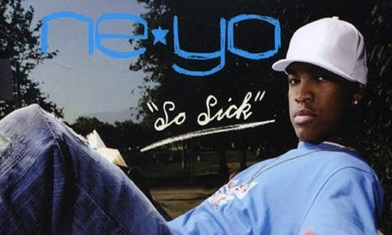

-
Categories:
Rhythm and Blues(RnB)
Rock
Original Pilipino Music(OPM)
Hip-Hop/Rap
-
Rhythm and Blues (RnB)
-

New Flame - Chris Brown (Feat. Rick Ross and Usher)
-
New Flame is a song recorded by American singer Chris Brown. It was originally released as a promotional single from Brown's album on March 5, 2014. This version only featured American rapper Rick Ross as a guest artist. A few months later, a day after the 2014 BET Awards were held, the single version of the song featuring Ross and American R&B singer Usher was released on June 30, 2014, as the fifth official single from his sixth studio album X.The song peaked at number 27 on the US Billboard Hot 100 and number 10 in the United Kingdom.
- 
Ne-Yo - So Sick
-
"So Sick" is a song by American singer and songwriter Ne-Yo. It was written by Ne-Yo, Mikkel S. Eriksen, and Tor Erik Hermansen for his debut studio album In My Own Words (2006), while production was hemled by Eriksen and Hermansen under their production moniker Stargate. The song was released as the second single from the album.
"So Sick" peaked at number one on the Billboard Hot 100. Outside of the United States, the song topped the UK Singles Chart, where it beat "Nature's Law" by Embrace to the top of the UK Singles Chart. "Nature's Law" peaked at number two due to a large count of legal download sales of the song that did not register with the Official Charts Company. The song was featured in the video games Saints Row 2 and SingStar..
-

SouthBorder - Rainbow
-
Rainbow by Southborder has become so popular and so iconic that its message has devolved into something of a cliche. However, that doesn’t mean to say that it’s any less relevant. Instead, its relevance is even more pronounced because of its popularity. Underneath the song’s popularity, catchy tune, and beautiful melody, there lies a message that anyone going through tough times can and should take comfort in, because, as the song goes, “even if there is pain now, everything will be all right,” and that eventually, “there’s a rainbow always after the rain.”